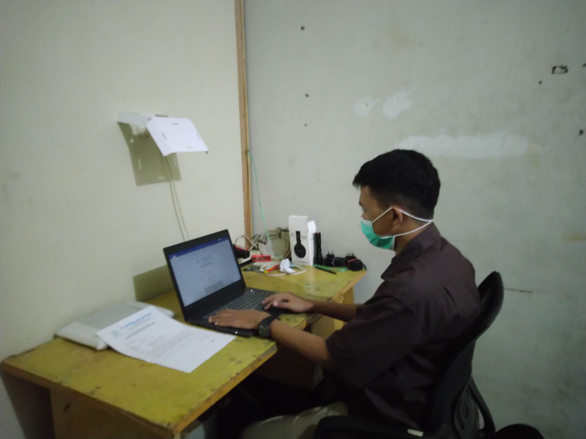

Tentang Saya
Kenalan dengan
Didan

Profil
Saya adalah mahasiswa Teknik Informatika tingkat akhir dengan fokus pada Network Support dan Website Development. Saya percaya bahwa teknologi yang baik adalah teknologi yang benar-benar membantu orang — fungsional, bersih, dan mudah dipahami.
Dengan pemahaman jaringan komputer (IP Addressing, Client–Server, Troubleshooting) serta pengalaman membangun aplikasi web menggunakan Laravel dan MySQL, saya siap berkontribusi dalam lingkungan kerja yang kolaboratif dan inovatif.
Saya juga terbiasa melakukan pengujian perangkat lunak — baik secara manual (Black Box) maupun otomatis menggunakan Selenium.
Hubungi SayaKeahlian
Tech Stack


Pengalaman Kerja
Riwayat Karir
Web Developer
PT. Alyusro Bandung
- Merancang dan mengembangkan modul pemesanan paket umrah berbasis web menggunakan Laravel & MySQL, mencakup fitur pemilihan paket, perbandingan harga, hotel, dan fasilitas.
- Mendesain struktur database relasional untuk menyimpan data paket umrah secara terstruktur dan efisien.
- Menyelesaikan prototype sistem pemesanan fungsional sebagai fondasi digitalisasi layanan perusahaan.
Staff Gudang & Logistik
PT. Amoeba Bio Sintesa
- Melakukan pengecekan dan pencatatan barang masuk/keluar untuk memastikan akurasi data stok.
- Mendukung proses distribusi barang ke luar kota, termasuk pengemasan dan pengiriman ke pelanggan.
- Membantu instalasi dan penempatan produk laboratorium di lokasi pelanggan.
Sertifikasi
Pengakuan Profesional
Oracle Academy
Sertifikasi dari Oracle Academy mencakup dasar-dasar database dan pemrograman.
Microsoft Excel
Sertifikasi kompetensi penggunaan Microsoft Excel untuk pengolahan data.
TOEIC
Test of English for International Communication — bukti kemampuan bahasa Inggris profesional.